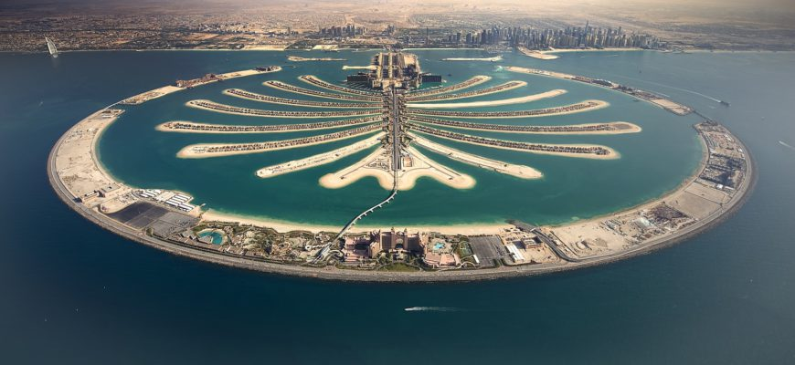
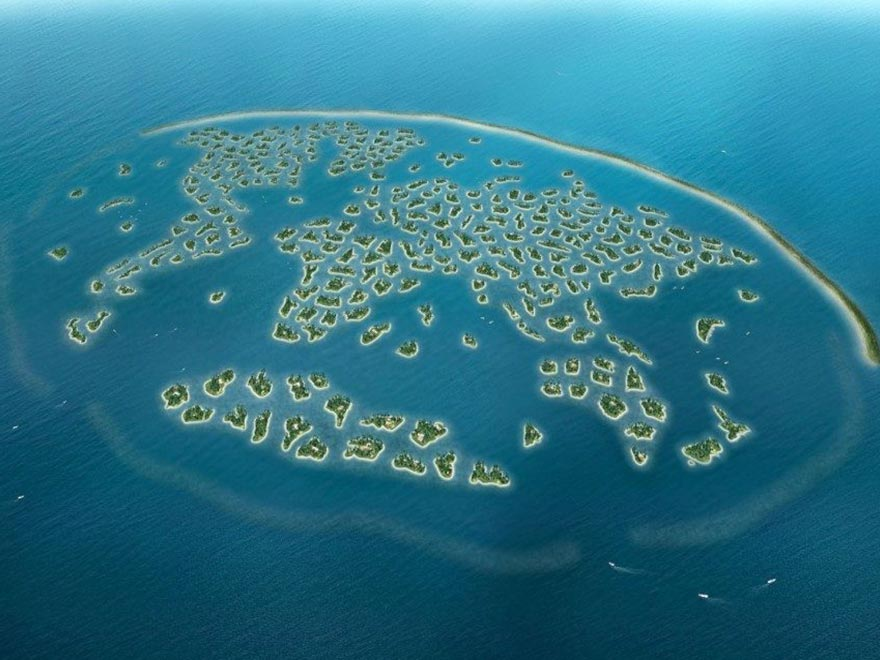
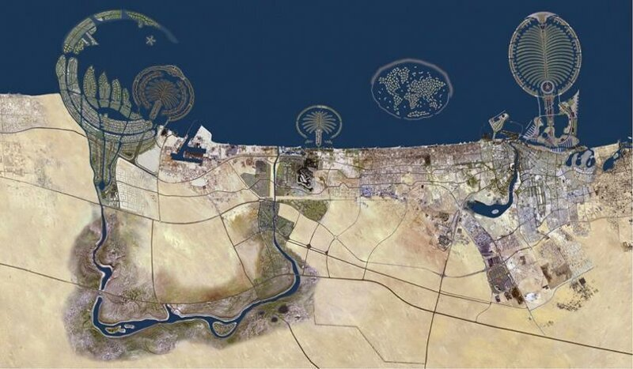
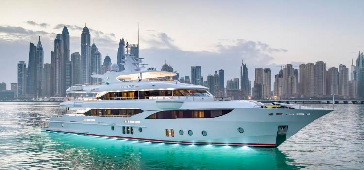
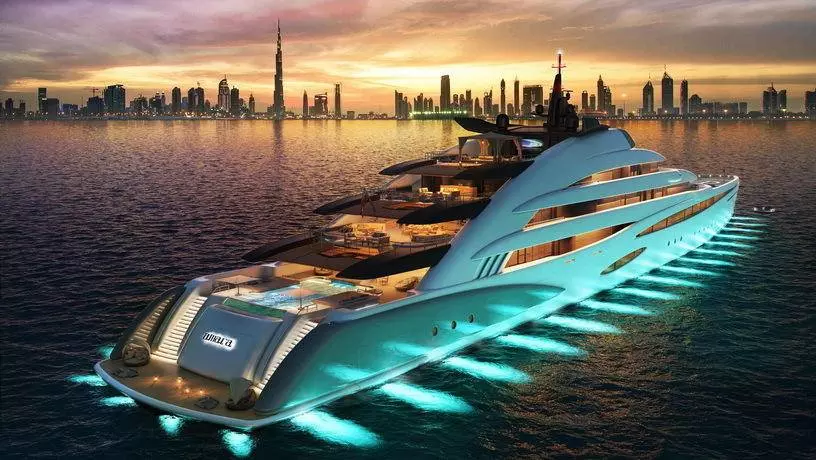
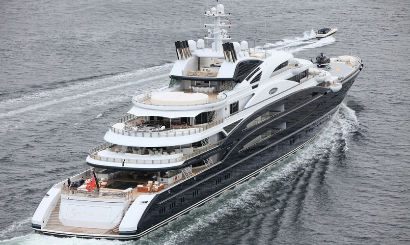
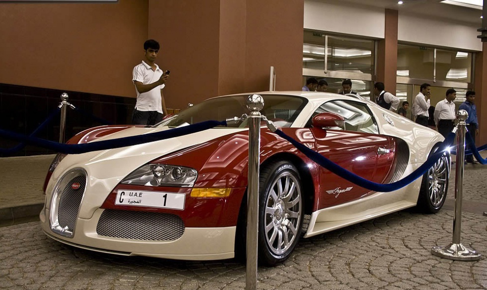
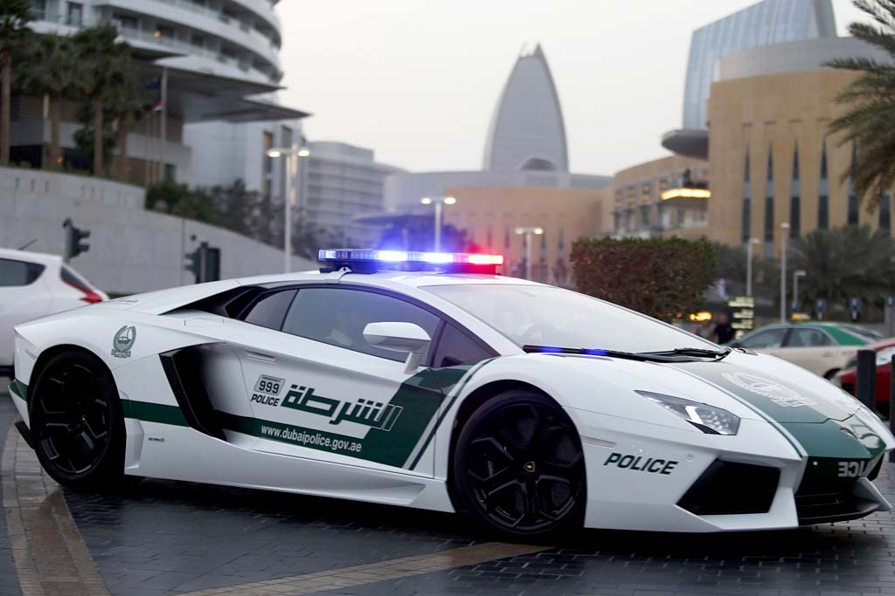

lux life
Islands
The artificial islands in the Persian Gulf, opposite the coastline of Dubai, are an amazingly ambitious project by the energetic and enterprising Sheikh Mohammed bin Rashid Al Maktoum. The construction of hotels, private villas, shopping and entertainment centers on the territories reclaimed from the sea has increased the tourist attractiveness of the emirate and reduced its dependence on the oil needle. Materials for artificial islands are monolithic stone, limestone and sea sand, mined directly from the bottom of the bay. The project began in 2001, and today its facilities are at various stages of completion - from the already popular Palm Jumeirah Island to the new island resort of Dubai Waterfront, the creation of which has been postponed indefinitely. The firstborn of the project and the new business card of Dubai - Palm Jumeirah Island, really looks like a giant date palm in the ring of breakwaters, the length of which is 11 km. The creation of Jumeirah took 5 years of hard work, 85 million tons of sand, 7 million tons of stone and 12 billion USD. On the 4-kilometer "trunk" of the palm tree, extending from it 16 crescent-shaped "leaves" and wide breakwaters with a total area of 900 football fields, there are multi-storey residential buildings, private villas, restaurants, shopping and entertainment centers, parks, tens of kilometers of beaches and more than a hundred fashionable hotels, including the famous. Continuation of the line of "palm" islands - Palm Jabal Ali, 1.5 times the size of Jumeirah. It was completely demolished in 2008.and, according to the original plans, it was supposed to have thousands of Polynesian bungalows standing on stilts right in the water, as well as 4 amusement parks and a marine aquarium. However, since 2011, due to low demand for real estate, most construction work has been stopped. The Mir Archipelago is 300 small bulk islands 4 km from the coast, united in groups that follow the shape of the earth's continents in outline. Their area is from 14 to 83 thousand square meters. m and all of them are separated by straits 50-100 m wide. Each bears the name of a country, large city or region. All the islands were conceived as elite territories with maximum privacy, where there are no outsiders and where you can only get by air or water. Only rich and famous people who received a personal offer from the developer company could buy them. Most of the owners of the islands, among whom there are immigrants from Russia, remain incognito. It is only known that the "Great Britain" was bought by billionaire Richard Branson, "Ethiopia" belongs to Angelina Jolie, and one of the islands of "Antarctica" was presented to Michael Schumacher by the Sheikh of Dubai himself. After the fall in oil prices and the events of the "Arab Spring", the construction of family residences in the archipelago froze. Nevertheless, since 2014, the Heart of Europe project has been implemented on 6 islands, including St. Petersburg, using new climate technologies. The only island open to the public "Lebanon" belongs to the Sheikh of Dubai. The beach complex The Royal Island Beach Club was built on it, operating from 11:00 to 18:00.Boats leave from Jumeirah Fishing Harbor every half an hour, the cost of the visit is 300 AED.
  Boats:)
Yachts that can get into the list of the largest in the world are rarely built and once they get into it, they retain their status for a long time. But in 2021, three ships broke into the rating at once, and another boat changed its name. Meet the updated rating of the largest yachts in the world from Robb Report. From extremely large to outright gigantic, the 25 largest yachts in the world are still impressive. They are built by the best shipyards around the world: in the Netherlands and the United Arab Emirates, in Italy and the United States, in Greece and in the UK. At the same time, many yachts are periodically re-equipped at the request of the owners so that they remain at the forefront of progress. The championship in the segment of the largest superyachts belongs to German shipyards. Only Lürssen built 11 of the top 25 ships, and two more yachts left the stocks of Blohm + Voss. Below is a list of the largest yachts to date. Originally built by Lürssen for Microsoft co-founder Paul Allen, the eight-story Octopus is the world's largest expedition yacht. Allen wanted to be able to anchor in the most remote corners of the world's oceans while retaining all the luxury of a superyacht. The yacht was launched in 2003 but was refitted in 2019. The ship has a hangar for a couple of helicopters, seven boats and an SUV, as well as an internal dock where the finds can be stored. There is also a diving center and a pressure chamber on board. For those who are not ready to dive into the water, but want to look at the life of marine life, the observation room with a glass bottom is addressed. Another unique feature of the ship is the basketball court at the stern.The yacht has participated in many reconnaissance discoveries. Her maximum speed is 20 knots. Launched in 2008, Al Mirqab was built for former Qatari Prime Minister Hamad bin Jasim al Thani under the supervision of Kusch Yachts at the Peters Werft shipyard in Germany. Exterior design by Tim Heywood. The long blue hull is topped by a white superstructure. The diesel-electric propulsion system allows Al Mirqab to reach a top speed of 21 knots. The interior of the yacht by Andrew Winch has received several awards. Its central element is a staircase resembling a wave. It is surrounded by numerous custom-made glass panels. The floors are marble and the walls are decorated with traditional Arabic motifs. The yacht is designed for 36 guests, and its crew is 45 people. Serene marked Fincantieri's debut in the superyacht segment. By the time she was launched in 2011, she was the largest yacht. Espen's seven-deck design features sharp curves on the sides of the hull and superstructure. This is done in order to provide a better view from the main and upper decks. There are balconies on three levels, and on the aft platform there is a glass pavilion with a winter garden. The Serene also has two helipads, a large swimming pool and a submarine hangar. The interior was designed by Pascal Raymond of Reymond Langton Design, but every detail of the project was carefully guarded. The owner of the yacht is often referred to as Russian businessman Yuri Sheffler.
  Cars
The most expensive cars of Arab sheikhs are of great interest around the world, they are often written about in the press. Although cars are collected not only by Arab kings, but also by many world stars of show business, for example, Nicolas Cage, David Beckham or Justin Bieber. Automobile addictions of the inhabitants of the Arab countries are unique in that they are in opposition to traditional Eastern conservatism. For example, in most Muslim states, primarily in the United Arab Emirates, Kuwait, Qatar, Bahrain, Lebanon and Saudi Arabia, legislation and etiquette dictate restraint in clothing, demonstration of emotions and financial condition. National costumes here perfectly mask not only the figure, but also the thickness of the wallet. Even on business trips abroad, the foundations of society dictate to Arab men and women to dress expensively, but discreetly. But in the case of the choice of cars, the situation is diametrically opposite. Expensive personal transport for an Arab today is like thoroughbred horses in the recent past: it allows you to emphasize the status and level of income without challenging public morality. Wealthy people in the Middle East don't just opt for fancy and powerful cars. They choose the most extraordinary and unprecedentedly fast sports cars, limousines with finishes that exceed the cost of the car itself, and SUVs with fantastic capabilities in terms of speed and maneuverability. One would like to liken them to flying carpets and walking boots from fairy tales.The most expensive cars of Arab sheikhs With the advent of the Millennium in the Middle East, the demand for exotic cars and supercars of European and American production is growing like an avalanche. This is especially true of the UAE and Saudi Arabia, which is associated with the strengthening of the economies of these countries, and partly with the growth in popularity of Formula 1 racing after the Bahrain Grand Prix was added to the calendar in 2004. Arab sheikhs are trying to get into their "stables" the rarest cars, for the most part assembled on individual orders. Western luxury automakers, in turn, have been working for the eastern magnates for the second decade, creating copies that in the brand's homeland would be considered overly pompous and not environmentally friendly. Take the MercedesBenz SLR McLaren 999 Dream, for which an incognito businessman from Dubai paid $11 million! The most expensive cars of Arab sheikhs Through the efforts of the Swiss studio Ueli Anliker Design, the serial Mercedes-Benz McLaren SLR has become a real treasure and entered the list of "The most expensive cars of Arab sheikhs." The decoration took 14 kg of gold and hundreds of rubies. At the request of the customer, gold 999 was used where possible, and where, it would seem, it was impossible - in headlight reflectors, on the steering wheel, instrument panel and even in the exhaust pipes. Same story with rubies. They decorate not only buttons and toggle switches, but even bolts, rivets and nuts. A gigantic 999-horsepower V8 engine matches the rich attire, accelerating the “gold bearer” to 100 km / h in 3 seconds, despite the precious ballast. Another eastern automotive extreme is scope and megalomania.This feature is perfectly illustrated by the collection of the sheikh from Abu Dhabi, Hamad bin Hamdan Al-Nahyan, which contains the most expensive cars of Arab sheikhs. Among the auto-exclusive exhibited at the National Automobile Museum of the UAE, an enlarged 50-ton (!) copy of the Dodge Power Wagon pickup truck from the 1950s stands out. The most expensive cars of the Arab sheikhs / The most amazing thing is that the car is on the move, and although the GM 300-horsepower diesel V8 is used only to move the pickup truck for short distances, the giant is listed in the Guinness Book of Records. The Sheikh's famous multi-wheel off-road vehicles are just as impressive. One of them, White Spider (“White Spider”) is an eight-wheeled (!) Monster built on the basis of the serial Nissan Patrol. Thanks to the installation of additional bridges that rise on hydraulics, the "spider" easily climbs sand dunes and leaves deep holes.
 